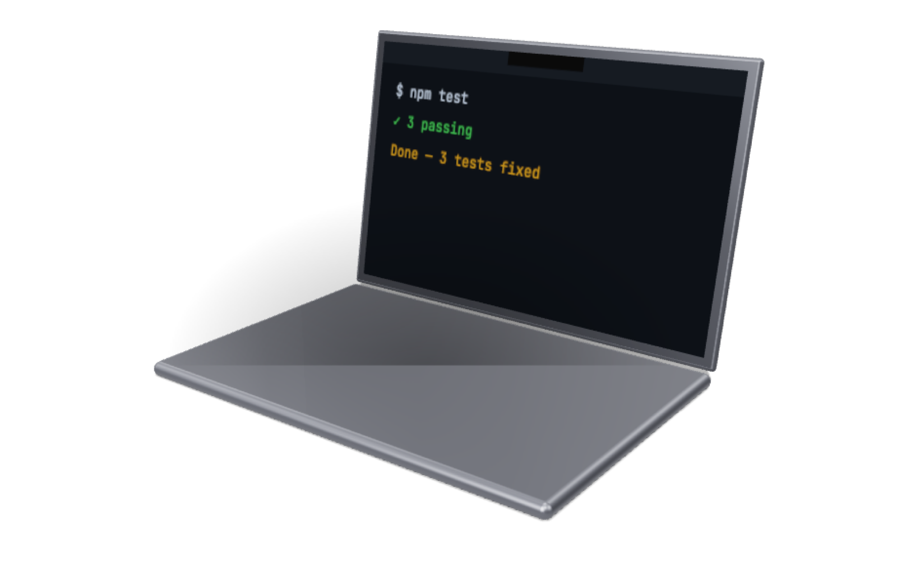
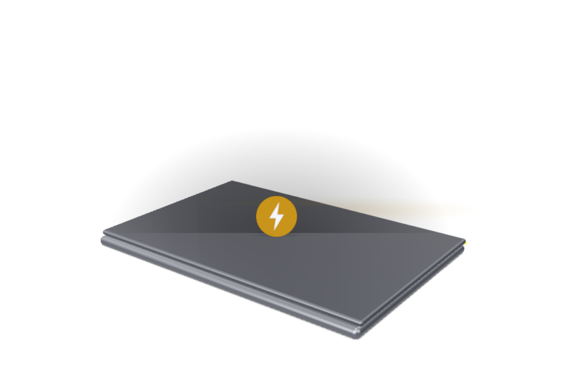

Close the lid.
KeepGoing keeps a Mac awake and online for Claude Code and Codex — reachable from your phone with the lid shut.
Try it


Lid closed, on battery
SleepDisabled 1 — still running
What it does
Override lid-closed sleep?
InstallCancel
- Download, drag to Applications.
-
Not notarised yet.
xattr -d com.apple.quarantine /Applications/KeepGoing.app - Click → Keep awake with lid closed.
$ ioreg -r -k AppleClamshellState -d 4 | grep State
"AppleClamshellState" = Yes # lid closed
$ pmset -g | grep SleepDisabled
SleepDisabled 1 # still running, on batterymacOS 26, on battery — replied via Claude Code from a phone.
Hot in a bag?
Warm under load; keep it on a surface, plug in if you can.
Battery?
2–5 h awake; it re-enables sleep 5 min after agents stop.
My keys / code?
Never touched; it only watches process names, power, and network.
Why a password?
Only root can override lid sleep; the rule allows two pmset commands and nothing else.
Free, MIT. If it saved your trip, buy me a coffee.